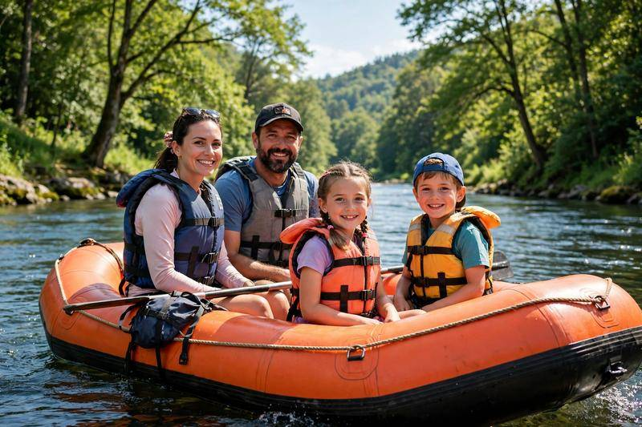

Extreme Rapids Co.
At Extreme Rapids Co., our purpose is to deliver exhilarating, safe adventures, with safety as our top priority. Our mission is to share the thrill of the river while respecting nature. Our creed: Courage, Teamwork, Respect. Our motto: Paddle Hard, Live Extreme.

History
Extreme Rapids Co. was founded in 1998 by a group of river guides who loved adventure. Starting with one raft and 3 guides, we have grown into a thriving company, guiding thousands of thrill-seekers.

From humble beginnings on the local river, our passion for the outdoors has driven us to expand. We now offer trips on five major rivers, with safety and customer satisfaction as our top priorities.